In Part 1 of my series on climate change I stated that one of my objectives of the series was to as best I could not rely on an appeal to authority. To try to not rely on having to “just trust” the researchers who are studying climate change.
However one of the issues of my prior analysis is that I was relying on data supplied by various research groups. The data I was relying on had been processed in ways that I didn’t know. Also it was a summary of a larger data set and because it was summarised it constrained the analyses I could do on it.
Now, one of the crtitiques of the science related to climate change is that the observed ncreases in temperatures is due to biases introduced in the processing of the data. Either on purpose or accidently.
This leads to the question is can we replicate the findings of those guys at NASA who produced the GISTEMP data.
As my partner pointed out I’m just a guy whose written lots of tax software thats trying to break into data science, thats doing all this from my bedroom using a laptop and a run of the mill internet connection. This sets limits on what I can reasonably achive with the resources I have available.
But here on Discovering Climate Change we don’t do exhaustive data analyses. We just do hypothesis road-tests to check the basic soundness of ideas. If the world is warming then we should be able to see that in a reasonable subset of the underlying data.
I’m an Australian so why not “Australia”? Also Australia is in another major drought so perhaps being able to drill in on Oz might be useful down the track.
In Australia, the raw weather observations are available for download from the Bureau of Meteorology website on their climate data online page.
Unfortunately the UI is a little clunky and a bit old. You can download the complete archive but only for one type of observation and one weather station at a time.
Or you can fill in a form submit a request and say what stations you want data for and maybe pay a fee and some dude in the Bureau will collate it for you and send it to you.
Bugger that. Those BOM guys could take a leaf from the Australian census peeps who let you download their entire data set in one half gig data file.
Any way Alan Turing gave us loops for a reason. The process for getting all the observations for all the stations is bit of a pain. You can download a text file containing a complete list of the weather stations for each type of observation. You do a bit of web-scraping to get the URL for each individual observation/weather station pair. Its not mega fast but I only have to do it once so I just leave it running overnight. Some downloads fail and have to be repeated, blah, blah, blah.
Finally you end up with about a Gigabyte of compressed data spread out over 21000 files. You write some more code to validate each download and extract all the data and dump it one big file that can be readily loaded into R which is the software I do my analysis work in.
Takes a few days to get it all but now I’ve done it so you don’t have to!
The rainfall data is rather huge. It contains about half a billion rows and chokes my computer if i try to load it into memory at once. I’m interested in working with it but I need to get round to sticking it in a database in order to continue.
But the daily maximum temperature is quite reasonable and contains only 16 million rows of data for 1700 different weather stations so we’ll start with that.
As you recall from Part 1 the global temperature change information that we got from the GISS group was given as a yearly temperature anomaly.
With the data we’ve got we should be able to have a good bash at trying to determine the temperature anomaly across Australia from around 1850 or so when the records started, to the present day. This should cover the modern period of temperature change that we are interested in.
Temperature anomalies are determined for each individual weather station by first determining a baseline for that individual weather station. So we can compare and collate the data for multiple stations, that period of time needs to be the same for all stations. It seems to be a standard in the data we’ve looked at so far to use 1951 to 1980 as that period of time, so we’ll go with that. I’ll call this period of time the baseline period.
We can only use weather stations that have a reasonably complete record during that baseline period, and many stations don’t. I’ve determined which weather stations have observations for 90% of days during the baseline period. I’ll call this list of weather stations the baseline stations.
I’ve shown them on the following map.
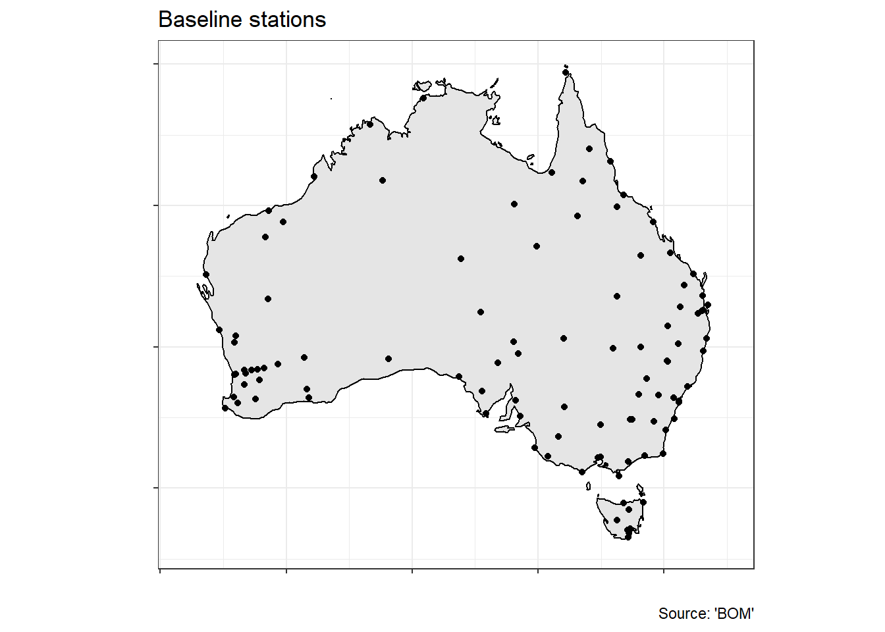
Of those 1700 weather stations we end up with a list of about a hundred. They seem reasonably spread out but don’t cover Central Australia. But we have what we have and we’ll see what we can do with it.
Lets have a look at the record for a single weather station. I picked Bourke Post Office at random and plotted the raw observations from 1965 to 1980.
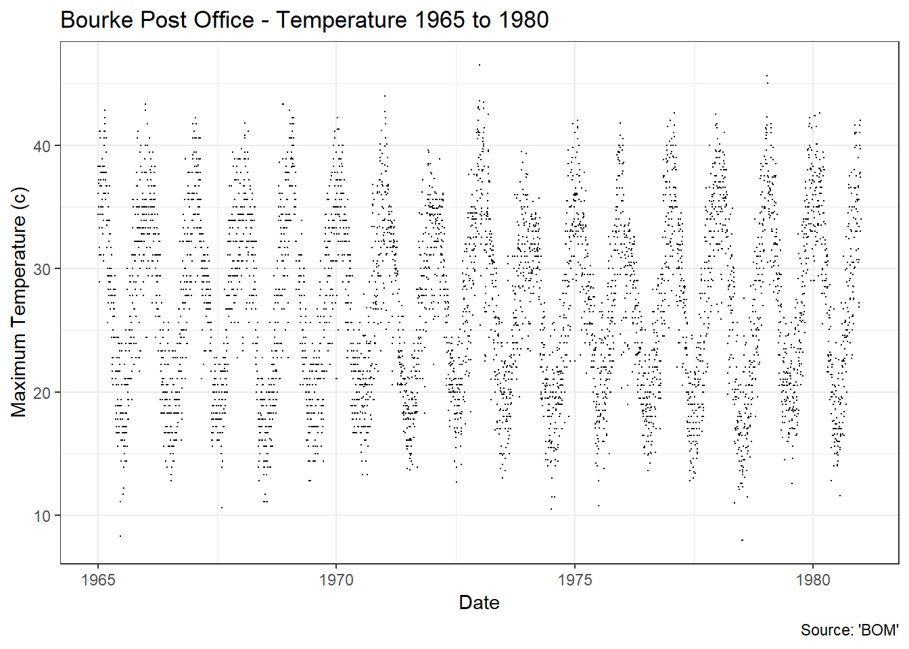
You can clearly see the temperature fluctating up and down with the seasons.
Also you can see that something changed in how the observations were recorded at around 1972-1973. Prior to that the observations form little horizontal lines that are indicative of the maximum resolution of the instrument. After that the recordings got more fuzzy which seems to suggest they changed to an instrument with better resolution. Measurements getting better over time is an important part of the story so its something to keep in mind.
But lets move on.
Next we need to take into account the seasons. To do this I work out the day of the year for each observation and then plot the temperature against that.
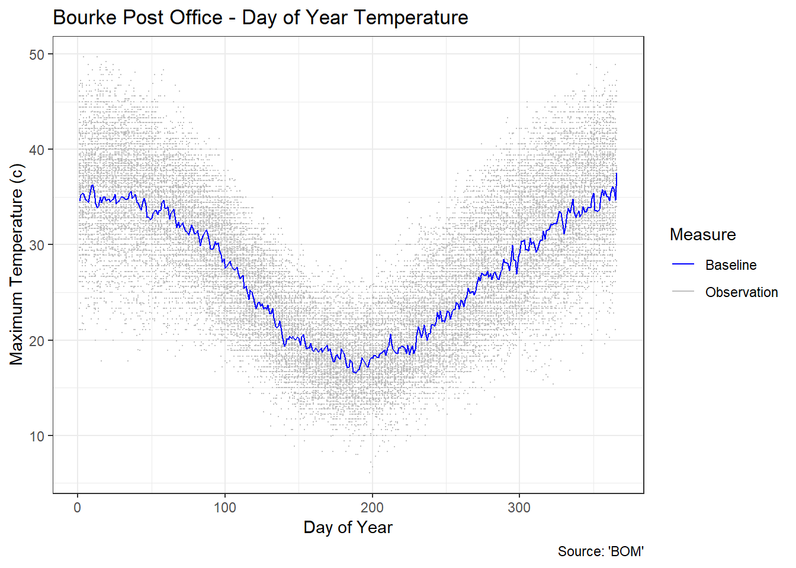
Now we can see how the temperature tends to fluctate throughout the year at Bourke. To get the baseline temperature we take the average of all the observations for each given day of the year. You can see that as the blue line. You can see that it nicely gives an impression of what the temperature tends to be in Bourke thoughout the year.
We’ll need to do that for each weather station. Or instruct the the machines to do it for us! That sounds much better than typing 330 million numbers into a calculator.
I’ve shown that for a random selection of 9 weather stations below.
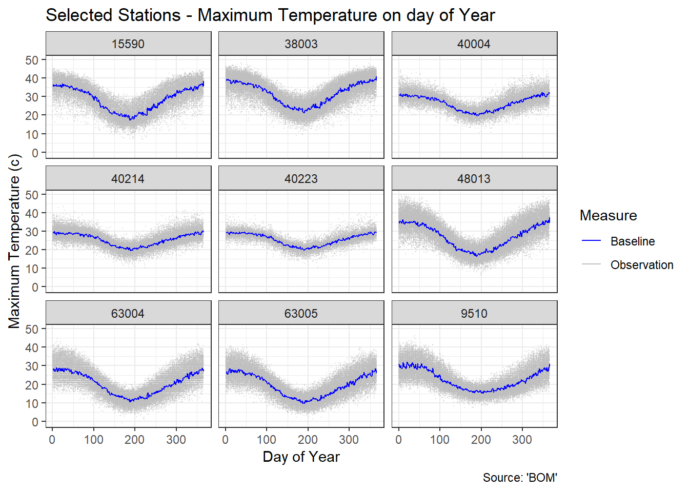
From this graph you can see how the temperatures fluctuate differently at each station.
Now we have the baseline temperatures for our selection of baselines weather stations. And each weather station has its own baseline temperature for each day of the year.
Now that we have a baseline we can now determine the temperature anamoly for all the temperature observations we have for that station. To do so we simple substract from the observed temperature the baseline temperature for that weather station for that day of the year.
I’ve shown this for Bourke Post Office below.
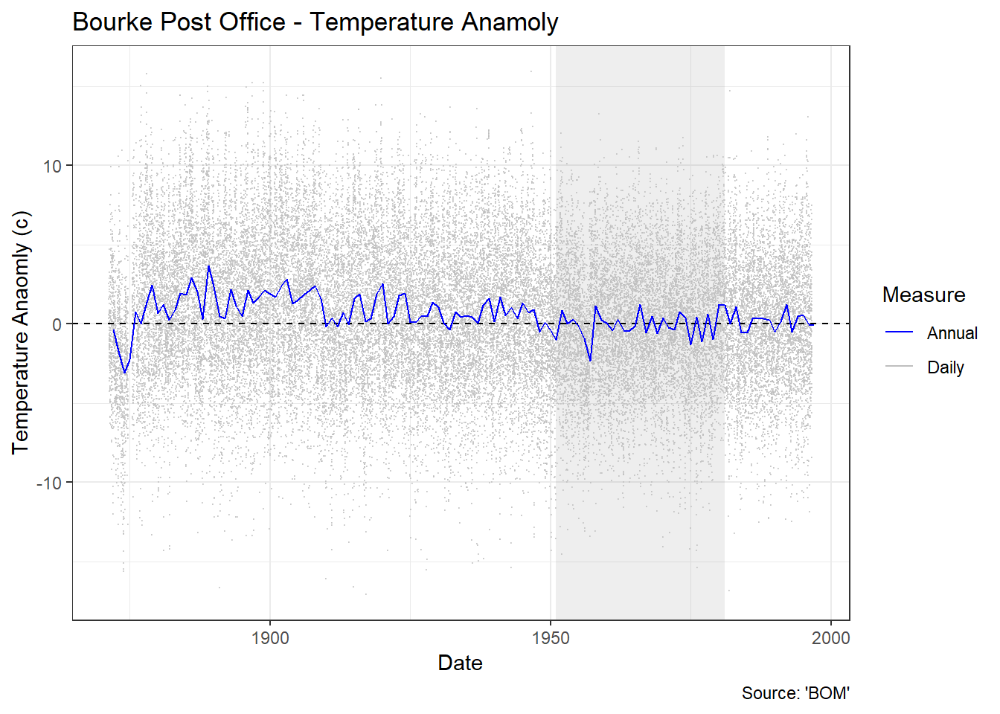
Awesome! This plots shows how different the temperature is from what we expect it to be on any given day of the year during that 1951 to 1980 baseline time period. I’ve highlighted the baseline period with the grey rectangle.
Now that we have temperature anamoly for each day we can work it out for a given year by just averaging them. This is shown as the blue line. The yearly number is the same sort of value provided by the GISS dataset.
Below I’ve shown the same graph for those 9 random stations I showed previously.
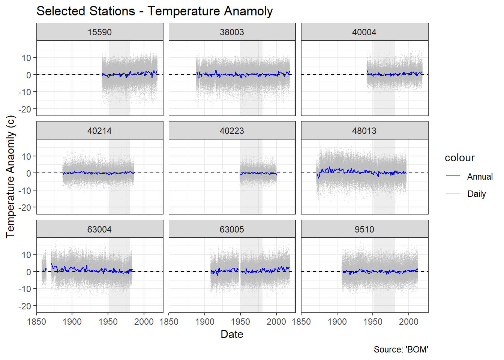
You’ll note that we have observations for different periods of time. The stations started and stopped recording at different times. Some stations even drop out and come back in again.
But is you look closely at the blue lines you can start to see hints of variations of the temperature over time at each station.
We can get an idea of how the climate is changing over time across the entire region by combining all those observations onto one plot as shown below.
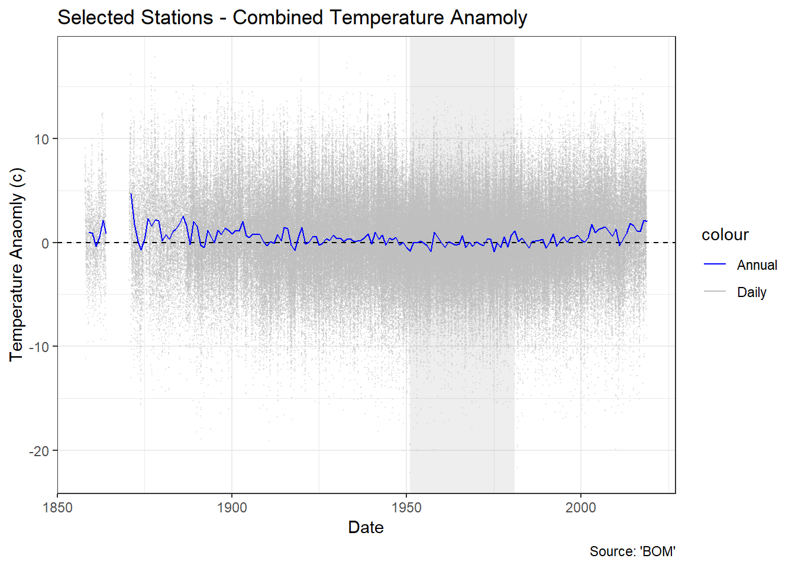
This graph is displaying no less than 315,000 seperate temperature observations, now merged together into one continuous blur. To get the blue line we take the average of the temperature anamoly for all stations for each year. If you were to repeat this across the entire world you’d would get the global temperature anamoly reported in the GISS data.
Next. to focus in on that yearly temperature anamoly we drop the frenzy of daily observations.
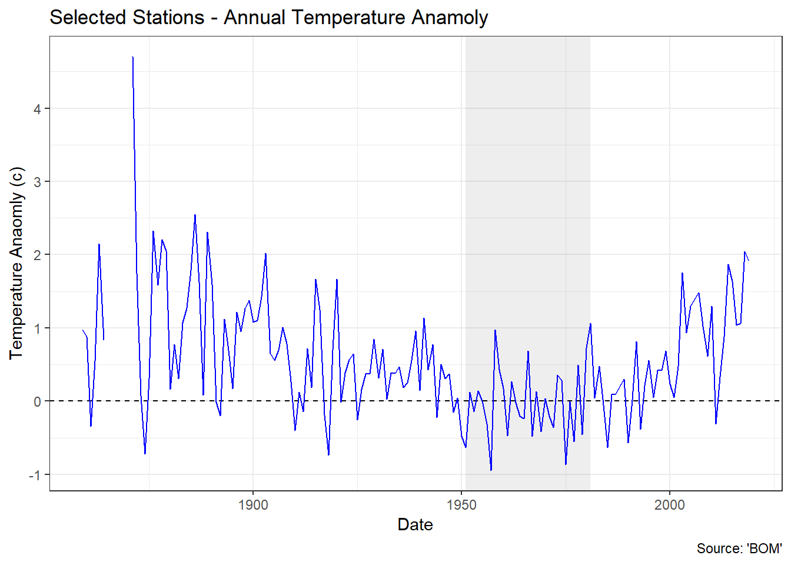
Oh boy. I’m started to get excited. The data prior to 1930 or so is a bit of a wild frenzy but after a while it starts to calm down. And post 1980 we are starting to see something familar.
To get an idea of why that wild frenzy occurs, on the next graph I’ve plotted the number of stations that contributed to that annual temperature anamoly for each year.
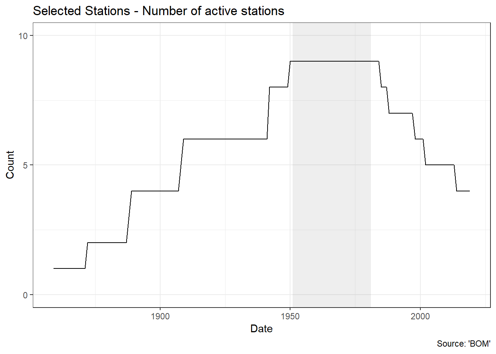
The data goes back to 1850 or so but only for a few stations. As we get closer to the baseline period more and more stations contribute to the data and after 1980 they started to drop of as they go off line.
However if you recall in the Bourke Post Office data it looks like the instrumentation changed over time. It seems perfectly reasonable to assume that the equipment recording temperatures as we approach the year 2000 is taking more accurate readings than the equipment used in the 19th century.
There has been quite a bit of coding, downloading, plotting and number crunching. But as best as I can tell I’ve replicated the description of how the global temperature anamoly was calculated by the GISS team, but done based on the raw Australian data downloaded directly from the Australian Bureau of Meteorology. I’ll call my calculation the Australian Land Temperature Anaomoly.
To compare the two records I’ll plot them on the same graph. Australia in orange and the world in Purple. Woh, I’m freaking out a little.
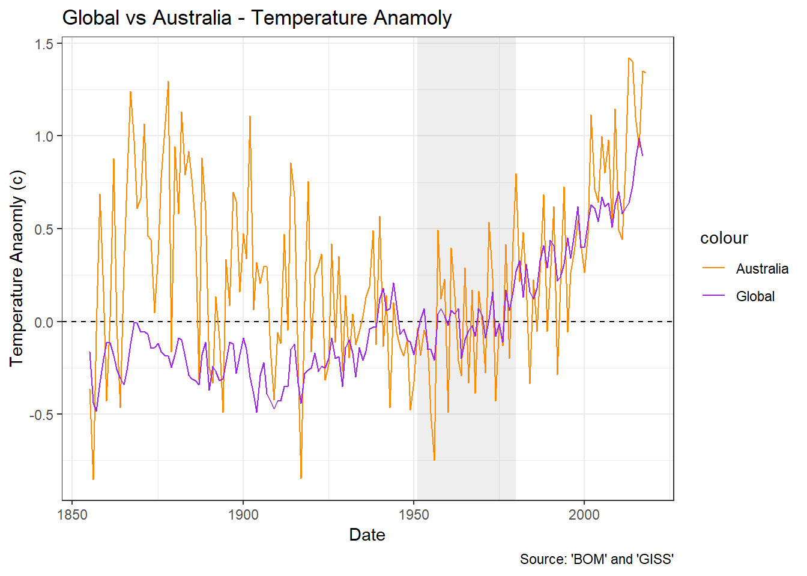
Man what a graph. Hang on. Why is it saying there is only 330,00 observations in the Australian record. We had 330,000 in my development sample before. Oops my bad thats 3.3 million. With so many digits it gets easy to start missing them.
Prior to 1930 or so the Australian data is a bit of a wild frenzy. Maybe the peaks sorta line but its hard to be sure. But after that the two lines start to match up.
If I plot the number of stations contributing to the Australian record you can see the story.
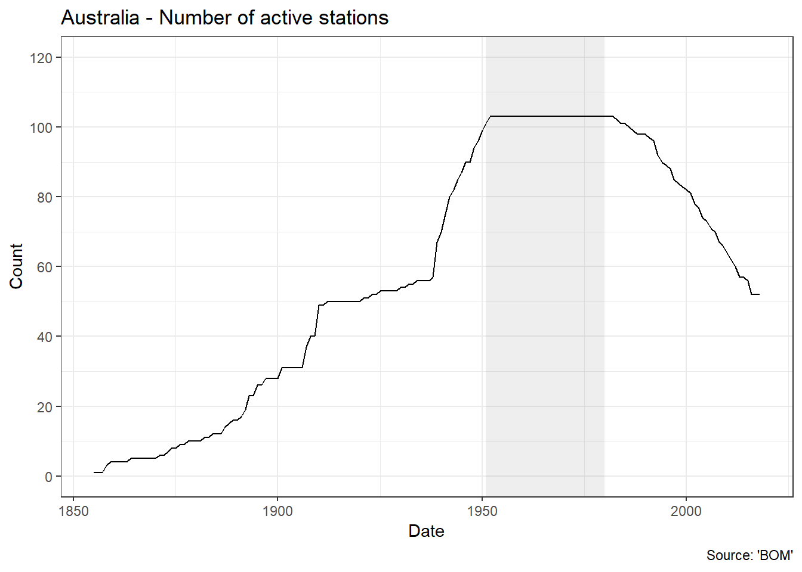
You can see how the number of stations recording temperature in Australia takes some dramatic leaps upturns. As we get more stations we get a more stable record. Post 1980 the number of stations starts to drop off as they stop being used. However presumably those fewer stations are now using 1980’s era equipment and data collection processes and we have a higher quality record.
The drop off doesn’t neccesarily mean there are fewer stations in total, just fewer stations that were active during that 1951 to 1980 baseline period.
Presumably the GISS people had the same issue about there historically being fewer stations with poorer quality data, however they were drawing data from temperature stations from across the world which results in a more stable, more accurate record. Or possibly it is about those corrections to account for differences in the recording equipment that they were being critiqued for.
Road Test Conclusion:
Once I started to get enough high quality data to start getting a reasonable looking plot the Australian anamoly record and the GISS anamoly record lined up nicely thank you very much. If the world is warming then so should Australia and if you go to the BOM and grab all their data you can find out that since 1930 thats exactly what has been happening.
There is a certain appeal in vintage vehicles, but this ones is just a clunker. 1 Star.
As an added bonus because I’ve now got the data and code to generate the temperature anamolies myself I can now plot stuff like this temperature anaomly map for 1980.
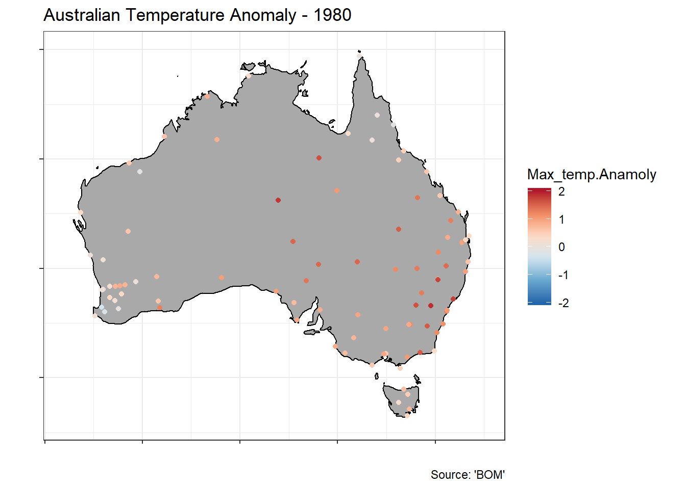
On this map you can start to how the temperatures are different for regions, like the west coast versus the east coast. So that starts to lead to some interesting ideas.
Also with a little more wrangling I’ll have the code and data to be able to do rainfall anamolies.
With that I think I’ll have enough resources to be able to start looking at a particular concern that is at the heart of Australians right now. Drought.